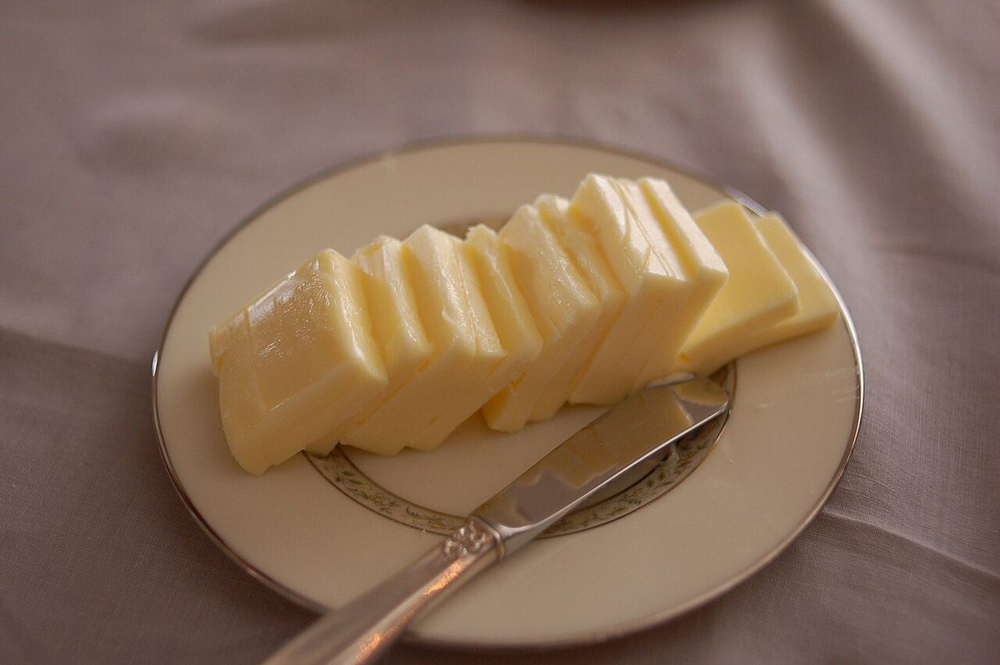

このサイトは制作側が作成した試作サンプルです。コンセプト・文言は制作側の案で、お店の理念や実際の内容ではありません。
メニュー
現在、メニューと価格をご案内するための準備を進めています。
メニュー・価格: 準備中(お問い合わせください)
取り扱い商品や価格は、確認でき次第ご案内します。
イメージ写真
これらは雰囲気を伝えるフリー素材の写真です。お店で取り扱う商品を示すものではありません。



掲載している写真はフリー素材のイメージで、お店の実際の写真・商品ではありません。日本国外など他地域で撮影されたもの、撮影地が不明なものを含みます。